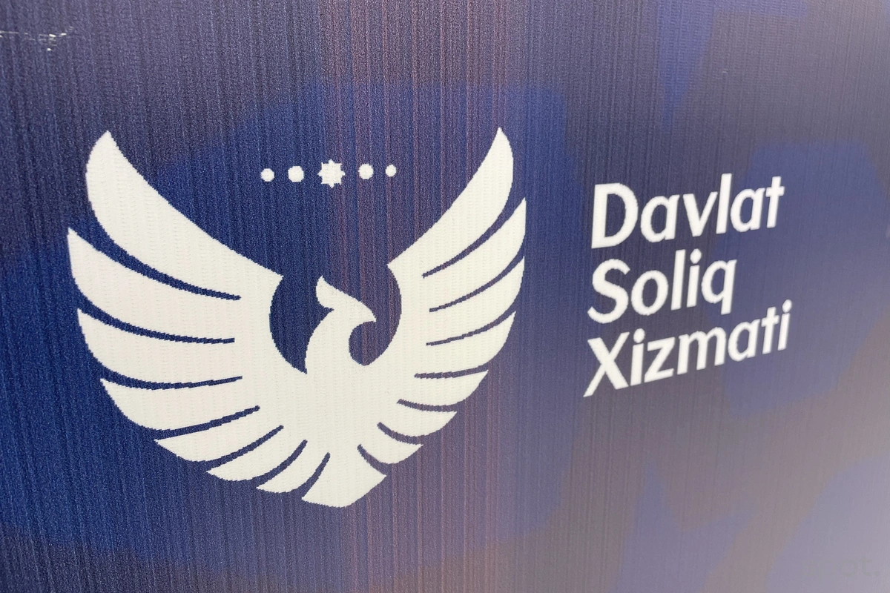

"Moliyaviy mustaqillik va Soliq islohoti:"
Tuman byudjetlarida QQSning bir qismi (Toshkentda 5%, viloyatlarda 20%) qoldiriladigan bo‘ldi. Mahalliy muammolarni hal qilish uchun markazdan mablag‘ kutish muammosi bartaraf etilib, hududlarga o‘z daromadidan infratuzilmani yaxshilash imkoni berildi.
2026-yilga kelib O‘zbekistonning iqtisodiy qiyofasi tubdan o‘zgardi va bu o‘zgarishlarning markazida moliyaviy desentrallizatsiya hamda soliq islohotlari turibdi. Ilgari barcha soliq tushumlari, ayniqsa, eng salmoqli manba hisoblangan Qo‘shilgan qiymat solig‘i (QQS) to‘liqligicha respublika byudjetiga yo‘naltirilgan bo‘lsa, hozirgi kunda tuman va shahar byudjetlarida ushbu soliqning ma’lum bir qismini (Toshkent shahrida 5 foiz, viloyatlarning tumanlarida esa 20 foiz) qoldirish tizimi mahalliy boshqaruvda yangi davrni boshlab berdi. Bu shunchaki raqamlar o‘zgarishi emas, balki "pastdan yuqoriga" tamoyili asosida rivojlanishning real mexanizmidir. Mahalliy hokimliklar va xalq deputatlari kengashlari endilikda har bir ko‘cha chirog‘i, ichki yo‘llar yoki ichimlik suvi tarmog‘i uchun markaziy hukumatdan mablag‘ kutib o‘tirmaydilar. Bu tizim hududiy rahbarlarning dunyoqarashini ham o‘zgartirdi: endi ular o‘z hududida tadbirkorlikni rivojlantirishdan bevosita manfaatdor, chunki hududda qancha ko‘p mahsulot ishlab chiqarilsa va xizmat ko‘rsatilsa, QQS tushumi shuncha ortadi va tumanning "cho‘ntagi"ga shuncha ko‘p pul tushadi.

Toshkent shahrida 5 foizli stavkaning belgilanishi poytaxtdagi iqtisodiy faollikning nihoyatda yuqoriligi va bazaning kengligi bilan izohlansa, viloyatlarda 20 foizgacha mablag‘ qoldirilishi hududlar orasidagi iqtisodiy tengsizlikni kamaytirishga xizmat qilmoqda. Bu mablag‘lar hisobiga tumanlarda infratuzilma loyihalari jadal amalga oshirilmoqda, bu esa o‘z navbatida yangi investitsiyalarni jalb qilish uchun zamin yaratmoqda. Soliq islohotining bu qismi ijtimoiy sohani moliyalashtirishda ham inqilobiy qadam bo‘ldi. Masalan, mahalliy byudjetga tushayotgan bu qo‘shimcha mablag‘lar mahalla darajasidagi muammolarni — bog‘chalar ta’miri, maktablarning moddiy-texnik bazasini mustahkamlash kabi masalalarni tezkor hal etishga imkon bermoqda.

2026-yilda ushbu islohotning samarasini har bir fuqaro o‘z mahallasidagi o‘zgarishlarda his qilmoqda, chunki mablag‘larni sarflashda "Tashabbusli byudjet" loyihalari bilan uyg‘unlik ta’minlangan bo‘lib, xalqning o‘zi qaysi muammoni birinchi bo‘lib hal qilishni tanlamoqda. Markazdan mablag‘ kutish muammosining bartaraf etilishi byurokratiyani keskin kamaytirdi va qaror qabul qilish jarayonini tezlashtirdi. Endilikda tumanlar o‘zlarining iqtisodiy salohiyatiga qarab mustaqil rivojlanish strategiyasini tuzmoqdalar, bu esa hududlar o‘rtasida sog‘lom raqobat muhitini yuzaga keltirdi. Viloyat hokimliklari ham o‘z daromad bazasini kengaytirish uchun innovatsion loyihalarni qo‘llab-quvvatlashga, yangi sanoat zonalarini barpo etishga ko‘proq e’tibor qaratmoqdalar. Xulosa qilib aytganda, QQSning bir qismini mahalliy darajada qoldirish — bu shunchaki moliya taqsimoti emas, balki joylarda davlat boshqaruvining samaradorligini oshirish, tadbirkorni qo‘llab-quvvatlash va pirovardida xalqning turmush darajasini yaxshilashga qaratilgan eng muhim strategik islohotdir.